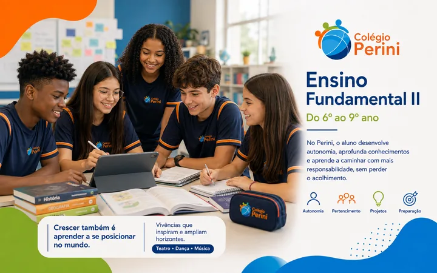

Colégio Perini · Carapicuíba · Desde 1987
Aprender.Pertencer.Transformar.
Uma educação que combina excelência acadêmica, acolhimento e formação humana em cada etapa da trajetória escolar.
Desde 1987trajetória e vínculo
Sistema COCconteúdo e acompanhamento
Formação integralacadêmica e humana

Uma escola que acompanha cada fase.Do Fundamental I ao Ensino Médio.
Nossa essência
Ensinar bem é só o começo.
Conhecimento ganha força quando o aluno encontra espaço para aprender, pertencer e construir autonomia ao longo da própria trajetória.
Etapas de ensino
Cada fase pede um novo jeito de acompanhar.
Uma proposta que amadurece com o estudante sem perder proximidade, intencionalidade pedagógica e identidade.
1987
Quase quatro décadas crescendo junto com alunos e famílias.
Nossa história
Crescemos junto com nossos alunos.
TradiçãoProximidadeEvolução
Sistema COC de Ensino
Tecnologia com intencionalidade pedagógica.
Veja como isso chega ao Ensino MédioProjetos
Aprender na prática. Crescer para a vida.
Experiências que conectam conhecimento, cultura, ciência, tecnologia, cidadania e comunicação.
Revisão e aprofundamento

Educação acontece na relação.
Corpo docente
Família + escola
Educar é uma construção conjunta.
Conhecido pelo nome.Acompanhado de verdade.Diálogo, confiança e acompanhamento caminham lado a lado.
Estrutura
Ambientes que apoiam a rotina de aprendizagem.
Informações rápidas
O que você precisa saber antes de visitar.
As principais informações para conhecer a proposta e dar o próximo passo.
Próximo passo
Agendar uma visita
Contato
Vamos conversar?
Fale com a equipe ou venha conhecer a escola de perto.
Colégio PeriniJardim Jussara · Carapicuíba
Abrir no mapa